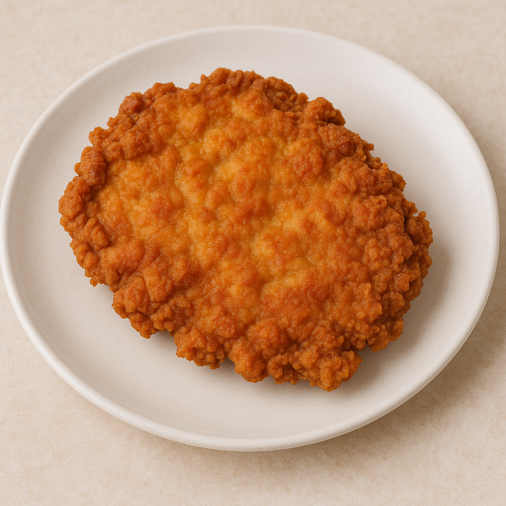

Home
Chicken Fried Chicken

A kid-friendly chicken dish that's perfect for little helpers. They'll enjoy crushing up the crackers, and don't worry about being exact with measurements - just go with the flow!
Ingredients
- 30 saltine crackers
- 2 tablespoons all-purpose flour
- 2 tablespoons dry potato flakes
- 1 teaspoon seasoned salt
- ½ teaspoon ground black pepper
- 1 egg
- 6 skinless, boneless chicken breast halves
- 2 cups vegetable oil for frying
Steps
- Add crackers to a large zip-lock bag, seal it shut, and use a rolling pin to crush them into rough crumbs. Mix in the flour, instant potato flakes, seasoned salt, and pepper until combined.
- Whisk the egg in a shallow bowl. Dip each chicken piece into the egg, then transfer to the bag with the crumb coating. Close the bag and shake well to cover completely.
- Preheat oil in a deep fryer or large pot to 350 degrees F (175 degrees C).
- Cook the chicken, flipping occasionally, until it turns golden brown and the juices run clear, about 15 to 20 minutes.